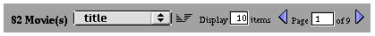

PATH
Documentation > WebObjects 4.5 >
WO Extensions

Component Description
The WOBatchNavigationBar component provides the ability to
navigate through a WODisplayGroup in batches. The component has
buttons that allow the user to navigate to the next batch and to
the previous batch. It also displays the number of batches, which
batch the user is currently viewing, and how many objects are in
each batch.

Synopsis
WOBatchNavigationBar { displayGroup=aDisplayGroup;
sortKeyList=anArray;
objectName=aString;
[width=aNumber;] [textColor=hexString;]
[border=aString;]
[bgcolor=hexString;]
};
Bindings
- displayGroup
- The display group that the WONavigation bar displays
in batches.
- sortKeyList
- Array of keys for the attributes by which the displayed
objects can be sorted. The user chooses one of these attributes
and a sort ordering (ascending or descending), and the navigation
bar displays the batches accordingly.
- objectName
- The name of the object displayed by the display group.
The navigation bar displays this name.
- width
- Width of the navigation bar. This attribute is passed
to the HTML
TABLE that
makes up the navigation bar.
- textColor
- Color of the text within the bar.
- border
- Width of the navigation bar's border. This attribute
is passed to the
TABLE that
makes up the navigation bar.
- bgcolor
- Background color of the navigation bar. This attribute
is passed to the
TABLE that
makes up the navigation bar.